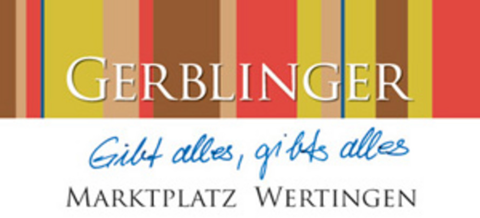
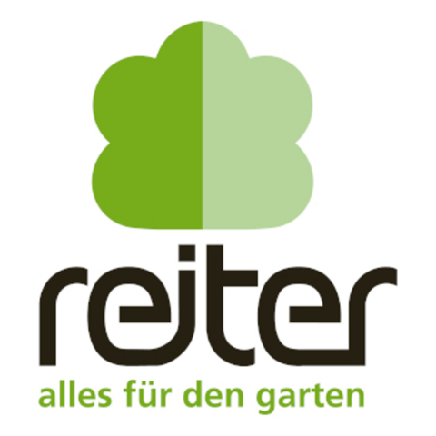
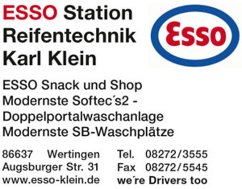
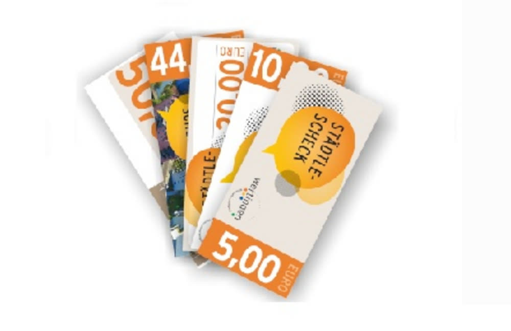

Schreibwaren Gerblinger
Wie gewohnt erhältst du hier die Wertinger Städtle-Schecks.
Am Marktplatz 14, Wertingen
Öffnungszeiten auf dergerblinger.deDer Wertinger Städtle-Scheck
Freude schenken, Wertingen entdecken und unsere heimische Wirtschaft stärken!
Städtle-Scheck
20 Euro
Einlösbar bei den teilnehmenden Betrieben der Wirtschaftsvereinigung Wertingen und Umgebung e.V.
Ob zum Geburtstag, zu Weihnachten, als kleines Dankeschön oder als Geschenk für Mitarbeiter – mit dem Wertinger Städtle-Scheck liegt man immer richtig!
Der Gutschein der Wirtschaftsvereinigung Wertingen kann bei zahlreichen teilnehmenden Geschäften, Gastronomiebetrieben und Dienstleistern eingelöst werden.
Das Beste daran: Die Beschenkten entscheiden selbst, wo sie ihren Gutschein einlösen möchten. Gleichzeitig bleibt die Kaufkraft in unserer Region und unterstützt unsere heimischen Unternehmen.
01 Kaufen
An drei Verkaufsstellen in Wertingen oder bequem per E-Mail.

Wie gewohnt erhältst du hier die Wertinger Städtle-Schecks.
Am Marktplatz 14, Wertingen
Öffnungszeiten auf dergerblinger.de
Eine weitere Verkaufsstelle für deinen Städtle-Scheck.
Bauerngasse 47, Wertingen
Öffnungszeiten auf garten-reiter.de
Dank der langen Öffnungszeiten auch ideal für den kurzfristigen Gutscheinkauf!
Augsburger Str. 31, Wertingen
Öffnungszeiten auf tankstelle-klein.deDu kannst die Städtle-Schecks auch weiterhin ganz unkompliziert per E-Mail bestellen.
Ansprechpartner: Andreas Klimesch, Schatzmeister der Wirtschaftsvereinigung Wertingen
E-Mail schreiben02 Gutscheinwerte
So findest du für jeden Anlass und jedes Budget das passende Geschenk. (Nach bisherigem Stand.)
03 Einlösen
Von Mode, Schmuck und Büchern über Gastronomie und Lebensmittel bis hin zu Dienstleistungen – mit dem Wertinger Städtle-Scheck hast du viele Möglichkeiten.
Der Gutschein kann bei den teilnehmenden Wertinger Betrieben eingelöst werden. Achte auf das Städtle-Scheck-Zeichen im Geschäft oder informiere dich in unserer Übersicht.
Alle teilnehmenden Geschäfte entdecken
04 So einfach funktioniert's
An einer unserer Verkaufsstellen oder bequem per E-Mail bestellen.
Ob für Familie, Freunde, Mitarbeiter oder Geschäftspartner – der Städtle-Scheck passt zu jedem Anlass.
Den Gutschein bei einem teilnehmenden Betrieb einlösen und gleichzeitig unsere heimische Wirtschaft unterstützen.
05 Städtle-Schecks für Unternehmen
Du möchtest deinen Mitarbeitern eine Freude machen und gleichzeitig die Wertinger Wirtschaft unterstützen? Dann ist der Städtle-Scheck eine schöne Möglichkeit, Wertschätzung zu zeigen und regionale Unternehmen zu stärken.
Steuerfreier Sachbezug
bis 50 € / Monat
Arbeitgeber können ihren Mitarbeitern im Rahmen der gesetzlichen Sachbezugsregelung bis zu 50 € monatlich steuer- und sozialversicherungsfrei gewähren. Bei entsprechender steuerlicher Eignung kann auch ein regionaler Einkaufsgutschein wie der Städtle-Scheck dafür genutzt werden.
Kein Problem! Auch Unternehmen können Städtle-Schecks in größeren Mengen anfragen.
Andreas Klimesch
Schatzmeister der Wirtschaftsvereinigung Wertingen
Wichtiger steuerlicher Hinweis: Die 50-€-Sachbezugsfreigrenze gilt nur unter bestimmten Voraussetzungen. Der Sachbezug muss zusätzlich zum ohnehin geschuldeten Arbeitslohn gewährt werden. Zusammen mit weiteren anrechenbaren Sachbezügen darf die monatliche Freigrenze von 50 € nicht überschritten werden. Der Gutschein selbst muss die steuerlichen Anforderungen erfüllen. Bitte stimme die konkrete Anwendung mit deiner Lohnbuchhaltung oder Steuerberatung ab.
06 Informationen für teilnehmende Händler
Du bist teilnehmender Betrieb und hast Städtle-Schecks angenommen? Die Abrechnung erfolgt nach den bisherigen Regelungen ganz unkompliziert.
07 Häufige Fragen zum Städtle-Scheck
Bei Schreibwaren Gerblinger, Garten Reiter und der Esso-Tankstelle Klein in Wertingen sowie auf Bestellung per E-Mail.
Ja! Unternehmen können auch größere Mengen oder Bestellungen auf Rechnung anfragen.
Der Gutschein kann bei den teilnehmenden Annahmestellen eingelöst werden. Die aktuelle Übersicht findest du auf unserer Homepage.
Für Gutscheine gilt grundsätzlich die gesetzliche dreijährige Verjährungsfrist ab Ende des Ausstellungsjahres. Maßgeblich sind die konkreten Gutscheinbedingungen und die gesetzlichen Regelungen.
Eine Barauszahlung ist nicht vorgesehen.
Grundsätzlich können geeignete regionale Gutscheine als steuerfreier Sachbezug eingesetzt werden. Ob der Wertinger Städtle-Scheck die Voraussetzungen erfüllt, muss vor der entsprechenden Nutzung bestätigt werden.
Eine Aktion der Wirtschaftsvereinigung Wertingen
Mit jedem Städtle-Scheck unterstützt du unsere heimischen Betriebe und trägst dazu bei, Wertingen als lebendigen Einkaufs- und Wirtschaftsstandort zu erhalten.
Regional schenken. Lokal einkaufen. Gemeinsam Wertingen stärken!